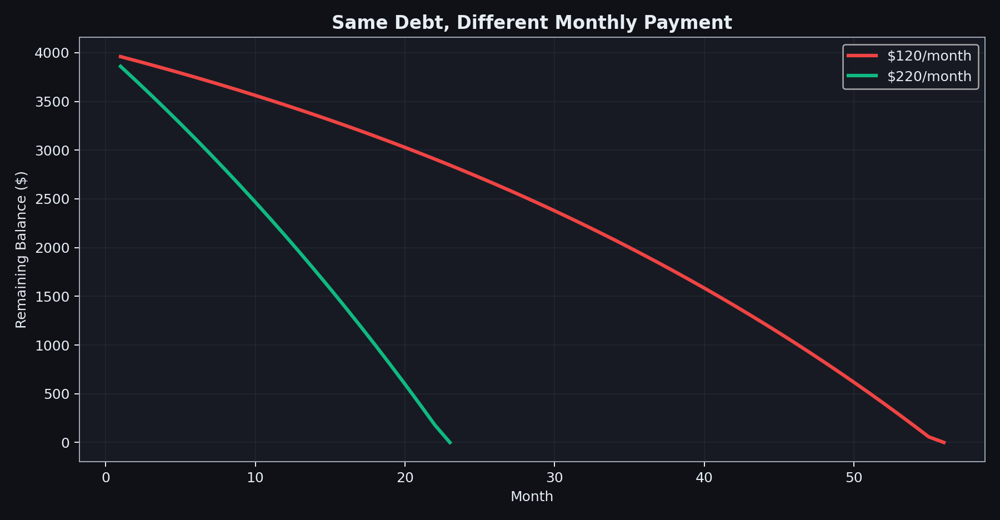
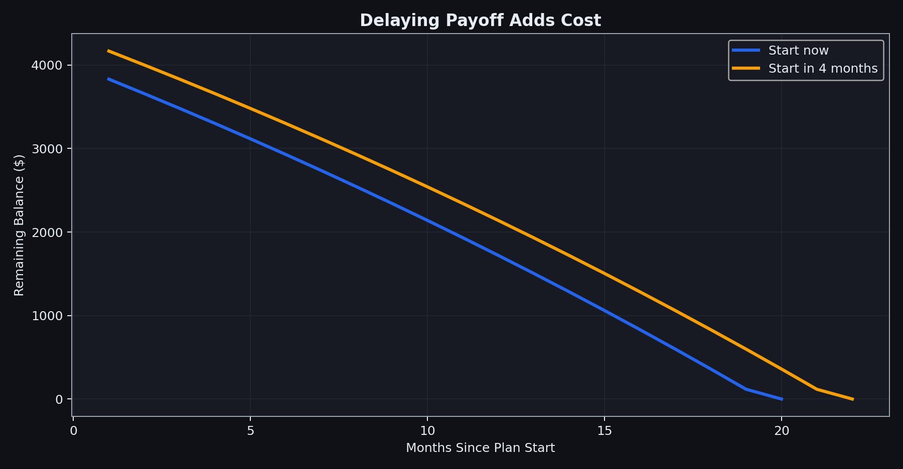
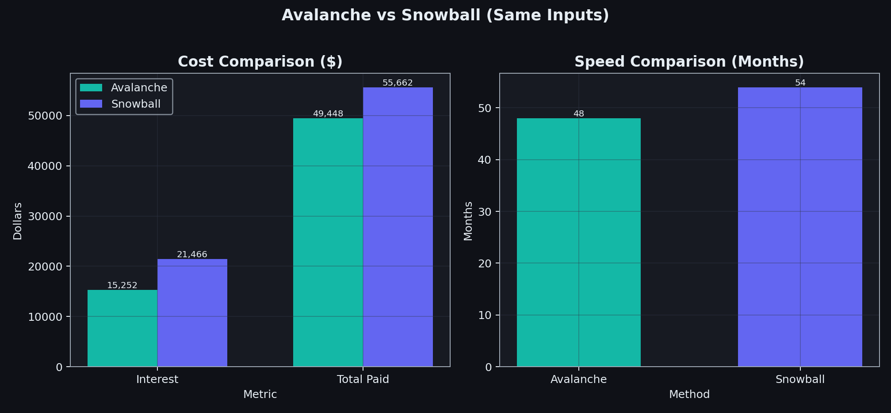

The Science of Paying Off Debt Efficiently
Whether you have $4,000 or $400,000 in debt, it is heavy. Taking on more debt can feel like a solution to today's problem, even if it hurts you tomorrow.
There are two main debt payoff methods: snowball and avalanche. Both work. The harder question is which one works for you. That is usually not a math problem. It is a psychology problem.
Before we get into methods, here is the plain-English version of the jargon:
- APR (annual percentage rate): the yearly price of borrowing money.
- Interest: the fee you pay for carrying debt. Higher APR means interest piles up faster.
- Minimum payment: the smallest amount your lender lets you pay each month.
- Principal: the original amount you borrowed.
Why paying more early saves much more later
Time is not neutral. The longer debt sits there, the more expensive it gets. At 24% APR, interest is about 2% per month. On a $4,000 balance, that is around $80 in month one, and then more each month if the balance does not fall quickly.

$120/mo to $220/mo: 56 months to 23 months, and about $1,636 less interest.
Waiting also costs money. If you wait four months before starting a plan, interest has extra time to compound before you make serious progress.

Start now vs wait 4 months: 20 months vs 22 months, plus about $170 extra interest.
If you remember one thing from this post, let it be this: paying debt early does two jobs at once. It lowers what you owe now, and it lowers future interest on what you owe.
Snowball: kill the smallest balance first
With snowball, you sort debts from smallest balance to largest, pay the minimum on everything, and send all extra money to the smallest balance first. Once that debt is gone, you roll that full payment into the next one.
This is powerful because it gives visible wins quickly. Seeing one account disappear can keep your motivation alive.
The downside: it can cost more interest overall if your highest APR debt is not the smallest balance.
Avalanche: kill the highest APR first
Pay minimums on everything, then attack the debt with the highest APR. This usually saves more interest and often pays everything off faster.
The downside: it can feel slower because you may spend months paying down a large high-APR balance before any account disappears from your list.

Avalanche vs snowball: 48 months vs 54 months, and about $6,215 less interest.
Both methods work. The better one is the one you will stick to.
Snowball is psychology dressed as strategy. Avalanche is math that requires discipline. Real life matters here. If quick wins keep you consistent, snowball may beat a mathematically better plan you abandon after a few months.
I often blend both: clear one tiny debt for momentum, then return to pure high-APR targeting.

Example comparison from the same simulator inputs.
Worked example: a real debt stack
The charts above use this exact set of five debts. Monthly take-home: $4,219. Fixed expenses: $3,376. Combined minimums: $772/month. That leaves $200 extra to throw at debt each month.
| Debt | Balance | APR | Min. Payment |
|---|---|---|---|
| Store Card | $890 | 15.92% | $77/mo |
| Credit Card A | $14,123 | 28.20% | $224/mo |
| Credit Card B | $8,356 | 20.47% | $212/mo |
| Personal Loan | $7,287 | 11.25% | $193/mo |
| Medical Bill | $3,540 | 2.08% | $66/mo |
| Total | $34,196 | n/a | $772/mo |
Running both strategies on these exact numbers:
| Strategy | Months | Interest paid | Total paid |
|---|---|---|---|
| Avalanche | 48 | $15,254 | $49,450 |
| Snowball | 54 | $21,470 | $55,666 |
Avalanche saves about $6,216 in interest and finishes roughly six months sooner. That is a meaningful chunk of time and money. Whether it outweighs the psychological wins of snowball is still a question only you can answer, but this makes the trade-off much easier to see.
So I built a simulator
Most debt calculators are too generic or too annoying to use. I wanted one where you can enter your real debts, real APRs, and actual monthly budget, then compare snowball vs avalanche directly. Every chart in this post was generated directly from the same simulation engine that powers the live app, not illustrative diagrams or filler visuals. You can read the source code on GitHub or find more tools like this on my data science page.
What no calculator can do for you
- 1. Refinancing: It only helps if the new loan is truly cheaper and affordable.
- 2. Emergency cash: Even a small buffer can stop new debt from replacing old debt.
- 3. Sustainability: A tiny entertainment budget is usually better than total restriction.
- 4. Simplicity: A simple monthly budget beats a complicated spreadsheet you never maintain.
- 5. Timing: Extra cash early is disproportionately powerful because it also reduces future interest.
- 6. Behavior: Being honest about needs versus wants is often where the biggest change happens.
- 7. Scale: The biggest wins usually come from major bills (housing, transport), not tiny cuts.
The best debt plan is any plan you can actually follow. Build one, start now, and keep it boring and consistent.
If you are overwhelmed, start here
You do not need to understand all of the above to act. Four things that take less than 20 minutes total:
- Write down every debt: name, current balance, APR, and minimum monthly payment.
- Add up all your minimums. This is your floor, the amount you must pay each month no matter what.
- Subtract all living expenses and those minimums from your monthly take-home. Whatever is left over, even a small number, is your weapon.
- Choose a method. Snowball if you need visible wins to stay on track. Avalanche if saving the most money matters more. Then send that leftover amount there, every month, without renegotiating with yourself.
Common questions
Is snowball ever actually better than avalanche?
Mathematically, no, avalanche always costs less. But if the quick early wins of snowball keep you consistent over two years when avalanche would lead you to disengage, snowball produces a better real-world result. The best strategy is the one you will stick to.
How much extra should I pay each month?
Any extra helps, and earlier is disproportionately better because it reduces the principal that future interest is charged on. Even an extra $30/month compounds meaningfully over time. The sensitivity analysis in the simulator shows exactly what each additional $50/month saves on your specific debt stack.
What if I cannot cover my minimum payments?
Snowball and avalanche cannot help until income exceeds minimums. You need to cut expenses, increase income, or contact creditors about hardship or forbearance programs before a strategy can take hold. The simulator will flag this and show the monthly shortfall clearly.
Should I consolidate my debts before starting?
Only if the consolidation APR is genuinely lower than your current debts and the new monthly payment is affordable. Otherwise you are reshaping the problem without reducing it. The simulator has a dedicated balance transfer analysis tab for modelling exactly this scenario.


{kind=link}
{kind=link}
{kind=link}